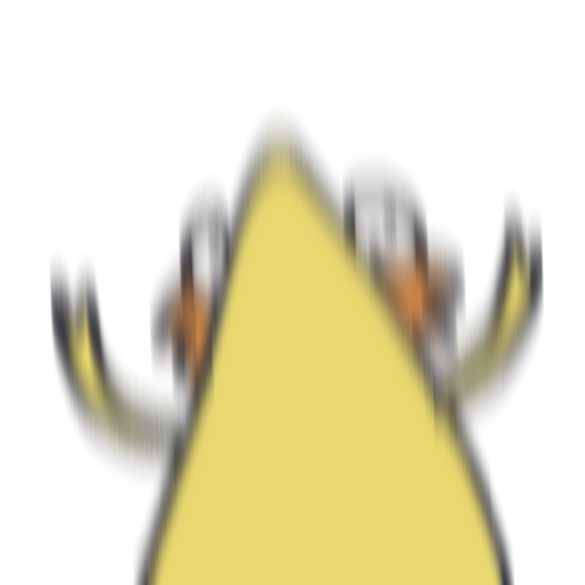

Emma Chen
Emma Chen
Emma Chen
Emma Chen
♥ 雲科二手一起換換買2.0 ♥
收超大雙人床
 POODAAAAAAAAA
POODAAAAAAAAA
欸馬叫我不要再貼複製文
我：知道了

黑化啊鮪
胡椒愛好者
 雲寶寶
雲寶寶
我總有一天會炸了這裡
POODAAAAAAAAA
蛤

黑化啊鮪
好啊都這樣啊我真的不在乎啦沒有人會在意我的感受我真的沒關係啊就這樣啊反正我死了也不會有人注意到啦你們就這樣啊我就命很賤啊活該被冷落啊真的沒關係我真的不在意你們就自己好好過你們的生活就好不要來找我我真的沒差
POODAAAAAAAAA
地圖顯示營業到了才發現鐵門拉下來，我要黑化了
112-2雲科超正能量瑜珈
祝大家身體健康期末歐趴
Emma Chen
媽的不要睡我手上

 阿尾
阿尾
抓到同學作弊…
之前當助教的時候曾抓到同學作弊
因為是初犯
又很誠懇地悔過
跟其他助教討論結果就只有當科考試零分計算
也沒張揚就這樣息事寧人
沒想到期末考的時候
居然又抓到她作弊
那種背叛和欺騙的怒火猛然竄起
這次，我發誓無論如何都不會輕饒
所以事後把她單獨叫去談話
看著這樣一個可愛文靜的女孩子
在我面前哭得像個淚人兒
還誠懇哽咽地不停道歉
實在有些狠不下心
但我還是硬起心腸告訴她
這次不能再這樣息事寧人了
我必須讓她深切地體會到
光是懺悔不足以彌補她一再犯下的錯誤
她要為自己的行徑付出應有的代價
「我會往上稟報，最嚴重的話，妳可能會被退學。」
那女孩徹底崩潰大哭，撕心裂肺梨花帶雨的面容讓我不禁側過頭去。
這時，一雙纖細的手臂忽然纏上我的脖頸，一個溫暖柔軟的嬌軀緊貼上來。女孩服貼在我的肩頭啜泣，細細地抽噎著說：「不要這樣，不要退學。我會盡一切努力、做牛做馬也好，我甚麼都肯幹、甚麼都願意做，只要能彌補錯誤都可以。」
我不禁微微顫抖起來，彷彿感覺到我的動搖，女孩仰起頭楚楚可憐地看著我，嘴唇抿起誘人的弧線。
「不可以，這樣不對。」我虛弱地說著，試圖做最後的抵抗，卻被女孩溫香軟玉的嘴唇堵住。
那是乾柴上爆裂開的第一枚火星，太晚了，在我動搖的那片刻沒能阻止，現在已經來不及了。
我等不及她緩緩地褪下衣服，粗暴地撕扯著，卻聽見一聲清脆地「啪」，有個卡片狀的東西隨著撕扯開的衣服，從口袋滑落到地上。
我愕然停下動作，目光再也無法從那東西上面移開。
那是學生證。
國立雲林科技大學的學生證。
我猛然推開女孩，跌跌撞撞地後退
原本熊熊燃燒的火焰早已消褪無蹤。
作弊是不對的
助教和學生之間有不倫更是不對的
雲科大學生證不只是證明自己就讀雲科大的資格
更是象徵著雲林最高學府應有的榮譽、擔當與責任心
身為一個踏上學術最高殿堂的學子所應具有的自律自愛
如果我這樣做，無疑會給雲科大的招牌蒙羞
一旦妥協，這輩子將再也抬不起頭
我將再也沒資格稱自己為雲科大生。
我看著女孩錯愕的臉龐，緩緩拾起那張學生證。
在她疑惑探詢的眼神中，我堅定地告訴她：
 女同越來越多
女同越來越多
女同

你可能認識...
-
 阿煒
阿煒
- 阿鮪
-
阿尾
-  黑化阿鮪
你可能會喜歡...

這我們